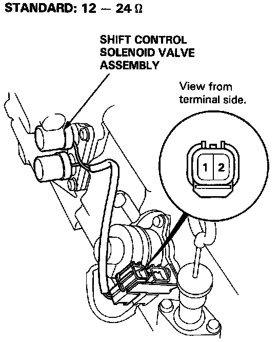

Shift Solenoid: Testing and Inspection

SHIFT CONTROL SOLENOID VALVES A/B
NOTE: Shift control solenoid valves A and B must be removed/replaced as an assembly.
1. Disconnect the connector from the shift control solenoid valve A/B.
2. Measure the resistance between the No. 1 terminal (solenoid valve A) of the shift control solenoid valve connector and body ground and between the No. 2 terminal (solenoid valve B) and body ground.
Resistance: 12-24 ohms
3. Replace the shift control solenoid valve assembly if the resistance is out of specification.
4. If the resistance is within standard, connect the No. 1 terminal of the shift control solenoid valve connector to the battery positive terminal. A clicking sound should be heard. Connect the No. 2 terminal to the battery positive terminal. A clicking sound should be hear. Replace the shift control solenoid valve assembly if no clicking sound is heard.